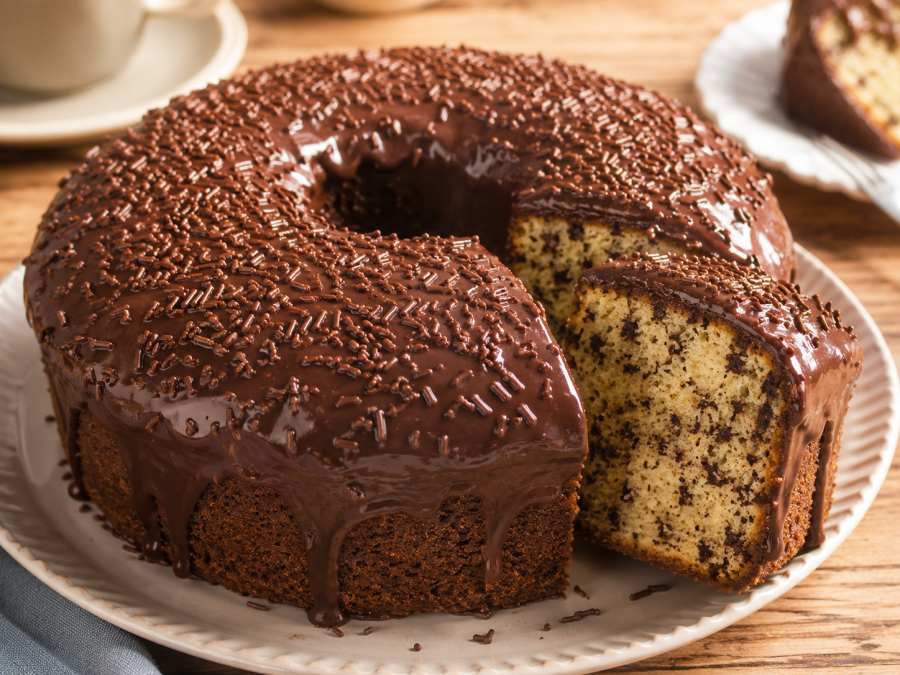

Bolo formigueiro
| Dificuldade | Porções | Tempo |
|---|---|---|
| Media | 10 | 55 min |

Ingredientes:
Massa
- 3 ovos
- 1 xícara de açúcar
- 1/2 xícara de manteiga ou margarina em temperatura ambiente
- 2 xícaras de farinha de trigo peneirada
- 1 xícara de leite (pode substituir por leite vegetal)
- 1 colher de sopa de fermento em pó
- 100g de chocolate granulado ou picado
- Manteiga ou óleo para untar a forma
Cobertura
- ½ xícara de chocolate em pó (ou achocolatado)
- ⅓ a 1 xícara de açúcar (conforme sua preferência de doçura)
- 1 colher de sopa de manteiga ou margarina
- ⅓ a ½ xícara de leite (ou água)
Modo de preparo
Massa
- Pré-aqueça o forno a 180°C e unte uma forma média com manteiga e farinha.
- Bata os ovos com o açúcar até obter um creme claro e fofo.
- Adicione a manteiga e continue batendo até incorporar totalmente.
- Acrescente o leite aos poucos, alternando com a farinha peneirada, misturando delicadamente.
- Misture o fermento e o chocolate granulado com cuidado para não perder a leveza da massa.
- Despeje a massa na forma e leve ao forno por aproximadamente 35 a 45 minutos. Faça o teste do palito: ele deve sair limpo quando o bolo estiver pronto.
Cobertura
- 5 colheres de açúcar
- 5 colheres de chocolate em pó
- 1 colher de margarina
- 3 colheres de leite
- Misture tudo, leve ao fogo até ferver, despeje sobre o bolo e finalize com granulado.